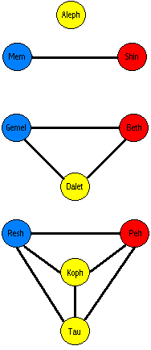
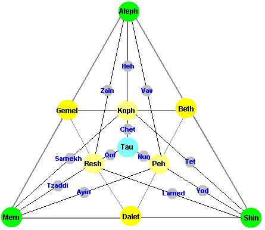
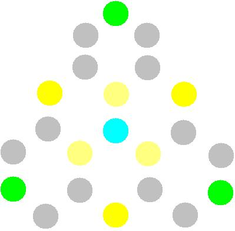

All creation is formed from three sacred principles: Yin, Yang and Balance. These three mothers are Aleph= Balance, Mem=Yin and Shin=Yang.
These three and their transcendental combinations equal 22 Sacred letters: The three mother letters: Aleph, Mem and Shin; the seven double letters and the 12 simple letters.
| Beth = | Aleph + Shin |
| Gemel = | Aleph + Mem |
| Dalet = | Shin + Mem |
| Koph = | Beth + Gemel |
| Peh = | Beth + Dalet |
| Resh = | Dalet + Gemel |
| Tau = | Aleph + Shin + Mem |
The three mother letters and the seven double letters form the Tree of Life.
The point is the simplest shape, the line is the simplest shape in 1 dimension., the triangle is the simplest shape in 2 dimensions. The tetrahedron is the simplest shape in 3 dimensions.
Aleph corresponds with the simple point. The mother letters Mem and Shin correspond with the 2 points of the line.
Bet, Gimel and Dalet are each composed of 2 simple letters in combination and they correspond with the simplest 2 dimensional shape: each one a point of the triangle.
Koph, Peh, Resh and Tau are composed of in effect all 3 mother letters in combination and they correspond with the simplest 3 dimensional shape: each one a point of the tetrahedron.

The Tree of Life has three primordial pillars:
The central yellow pillar of balance contains Aleph the mother of balance,
Dalet which is composed of Shin and Mem and is thus balanced.
Koph which is composed of Beth and Gemel.
Tau which equals Aleph + Shin + Mem, Bet + Gimel + Dalet and Koph + Peh +
Resh and thus is balanced.
The left blue pillar of Yin contains:
Mem the mother of water, the mother of yin.
Gemel which is composed of Mem and Aleph and is thus overall yin.
Resh which is composed of Gemel and Dalet and is thus overall yin.
The right red pillar of Yang contains:
Shin the mother of fire, the mother of yang.
Beth which is composed of Shin and Aleph and is thus overall yang
Peh which is composed of Bet and Dalet and thus is overall yang
| Mem | Aleph | Shin |
| Tamas | Satva | Rajas |
| Water | Air | Fire |
| Yin | Tao | Yang |
| Belly | Chest | Head |


The twenty-two foundation letters are formed in the mouth in five places:
| Throat | Aleph | Heh | Chet | Ayin | |
| Palate | Gimel | Yod | Kaf | Quf | |
| Tongue | Dalet | Tet | Lamed | Nun | Tau |
| Teeth | Zain | Shin | Samekh | Tzaddi | Resh |
| Lips | Bet | Vau | Mem | Peh |
Ten Sefirot of Nothingness plus twenty two [foundations] letters: Three Mothers, Seven Doubles, and Twelve Simples.
Ten Sefirot of Nothingness: The number of the ten fingers, five opposite five, with a single covenent precisely in the middle.
Ten Sefirot of Nothingness: Ten and not nine; ten and not eleven. Understand with Wisdom, and be wise with Understanding. Examine with them and probe them, return the mind to it's source.
Ten Sefirot of Nothingness: Their measure is ten which have no end. A depth of beginning, a depth of end; a depth of good, a depth of evil; a depth of above, a depth below; a depth east, a depth west; a depth north, a depth south. The singular Master, God faithful King, dominates them all from His holy dwelling until eternity of eternities.
Ten Sefirot of Nothingness: Their vision is like the "appearance of lightening", their limit has no end. His Word in them is "running and returning". They rush to his saying like a whirlwind, and before His throne they prostrate themselves.
Ten Sefirot of Nothingness: Their end is embedded in their beginning, and their beginning in their end, like a flame in a burning coal. For the Master is singular, He has no second. And before One, what do you count?
Ten Sefirot of Nothingness: Bridle your mouth from speaking and your heart from thinking. And if your heart runs, return to the place.
Ten Sefirot of Nothingness: One is the Breath of the Living God, blessed and benedicted be the Name of the Life of worlds. Voice, Breath and Speech. This is the Holy Breath (Ruach HaKodesh).
Two: Breath from Breath. With it engrave and carve twenty-two foundation letters - three, Mothers, seven Doubles, and twelve Elementals - and one Breath is from them.
Three: Water and Breath. With it engrave and carve chaos and void, mire and clay. Engrave them like a garden plot, carve them like a wall, cover them like a ceiling.
Four: Fire from water.
Five: With
three of the simple letters seal "above". Choose three and place them in His
great Name: YHV. With them seal the six extremities. Face upward and seal it
with YHV.
Six: Seal "below". Face downward and seal it with YHV.
Seven: Seal "east. Face straight ahead and seal it with HYV.
Eight: Seal "west". Face backward and seal it with HVY
Nine: Seal "south". Face to the right and seal it withn VYH.
Ten: Seal "north". Face to the left and seal it with VHY.
These are the Ten Sefirot of Nothingness. One is the Breath of the Living
God. Breath [from Breath], Fire [from water, and the extremities], up, down,
east, west, north and south.
There are Seven Doubles: Seven and not six, seven and not eight. contemplate them deeply, make each pure one stand on its own essence, and return the mind to its source.
The seven doubles correspond with the seven directions. These are the up,
down, east, west, north, south and the center which upholds them all.
| Beth | Wisdom | Moon | Right Eye | Monday |
| Gimel | Health | Mars | Right Eye | Tuesday |
| Daleth | Fertility | Sun | Right Nostril | Wednesday |
| Kaph | Life | Venus | Left Eye | Thursday |
| Peh | Power | Mercury | Left Ear | Friday |
| Resh | Peace | Saturn | Left Nostril | Saturday |
| Tau | Beauty | Jupiter | Mouth | Sunday |
| Heh= | Aleph + Koph | Aries | |
| Vav= | Aleph + Peh | Taurus | |
| Zain= | Aleph + Resh | Gemini | |
| Chet= | Aleph + Tau | Cancer | |
| Tet= | Shin + Koph | Leo | |
| Yod= | Shin + Peh | Virgo | |
| Lamed= | Shin + Resh | Libra | |
| Nun= | Shin + Tau | Scorpio | |
| Samekh= | Mem + Koph | Sagitarious | |
| Ayin= | Mem + Peh | Capricorn | |
| Tzaddi= | Mem + Resh | Aquarius | |
| Qof= | Mem + Tau | Pisces |
Twenty-two foundation letters: They are set in a circle as 231 Gates. And this is the sign: There is no good higher than delight (ONG), and there is no evil lower than plague (NGO).
How? Weigh them and transpose them, Aleph with each one, and each one with Aleph; Bet with each one, and each one with Bet. They repeat in a cycle. Therefore, everything formed and everything spoken emanates in one name.
The twenty-two letters through permutations and transformations depict the nature of all that was, all that is and all that will be in the future.
how does one permute them? Two stones build two houses, three build six
houses, four build 24 houses, five build 120 houses, six build 720 houses,
and seven build 5040 houses. From there on go out and calculate that which
the mouth cannot speak and the ear cannot hear.
Three: Each one stands alone.
Seven are divided, three opposite three, with a decree deciding between
them.
Twelve stand in seeming conflict: three who love, three who hate, three who
give life, and three who kill. The three that love are the heart, the ears
and the mouth; the three that hate are the liver. the gall bladder, and the
tongue. And God, the fathful King dominates them all.
One over three, three over seven, and seven over twelve, and all of them support and are supported by each another.